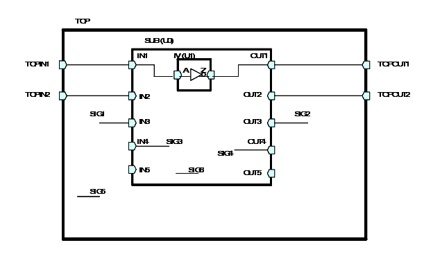

| Description | Non-driving nets are useless and must be removed. This rule will fire on non-driving nets, but will not fire on unused nets, because unused nets do not cause any problem and another rule NTL_LAN15 detects such nets. If the illegal net is a part select of a vector, then a secondary message appears to report the vector's width and range information.Arguments: %s1 is the non-driving net source position which is the line where the non-driving net is defined.%s2 is the signal name of the non-driving net.%s3 is the bit size of the non-driving net (if it is a vector or part select of a vector).%s4 is the left bound of the vector.%s5 is the right bound of the vector.Source Position:
The position is the line where the non-driving net is defined. You can use the rule_set_parameter Tcl command and the APPLY_UNUSED_PORT parameter to specify if you want Leda to examine for unused ports. If you don't want this rule to examine for unused ports, set the value of this parameter to 0. The default value is 1. For example:
leda> rule_set_parameter -rule NTL_CON13 \
-parameter APPLY_UNUSED_PORTS -value {0}
You can use the rule_set_parameter Tcl command and the NTL_CON13_IGNORE_SUPPLY_ASSIGNMENT parameter to specify if you want Leda to ignore net that has been assigned to supply. If you want this rule to ignore net that has been assigned to supply, set the value of this parameter to 1. The default value is 0. For example:leda> rule_set_parameter -rule NTL_CON13 \ - parameter NTL_CON13_IGNORE_SUPPLY_ASSIGNMENT - value 1 |
| Policy | DESIGN |
| Ruleset | CONNECTIVITY |
| Language | VHDL/Verilog |
| Type | Hardware |
| Severity | Error |
The below schematic demonstrates the behavior of this rule:

The default behavior (parameter APPLY_UNUSED_PORT with default value) of this rule for the above circuit is:
TOP.v:4: NTL_CON13: non driving net TOP.SIG2 TOP.v:5: NTL_CON13: non driving net TOP.U0.OUT4 TOP.v:5: NTL_CON13: non driving net TOP.U0.OUT5 TOP.v:13: NTL_CON13: non driving net TOP.U0.IN2 TOP.v:13: NTL_CON13: non driving net TOP.U0.IN3 TOP.v:13: NTL_CON13: non driving net TOP.U0.IN5 TOP.v:15: NTL_CON13: non driving net TOP.U0.SIG3
The behavior (parameter APPLY_UNUSED_PORT with value set to 0) of this rule for the above circuit is:
TOP.v:13: NTL_CON13: non driving net TOP.U0.IN2Example
This is an example of invalid Verilog code that illustrates the problem:
module ntl_con13_top ( Reset, Din, Dout); input Reset, Din; output Dout; // undriven net wire Dout_nondriving ; // NTL_CON13 fires -- non-driving net wire Net_nondriving_nondriven; // undriven net, also non-driving net assign Dout_nondriving = !Reset ? 0 : Din ; endmoduleSample Output
2: input A; // no driver ^ test_con13.v:2: CONNECTIVITY> [ERROR] NTL_CON13: non driving net TEST_CON13.A
In the above sample output,
Secondary Message
the instantiated module is: %s2
Argument
%s2 is the instance whose output port is the non-driving net. But the DB cell whose output is not driving any net will be ignored.
Source Position
The position is the line in which the instance %s2 is defined.
Schematics in Path Viewer
No.